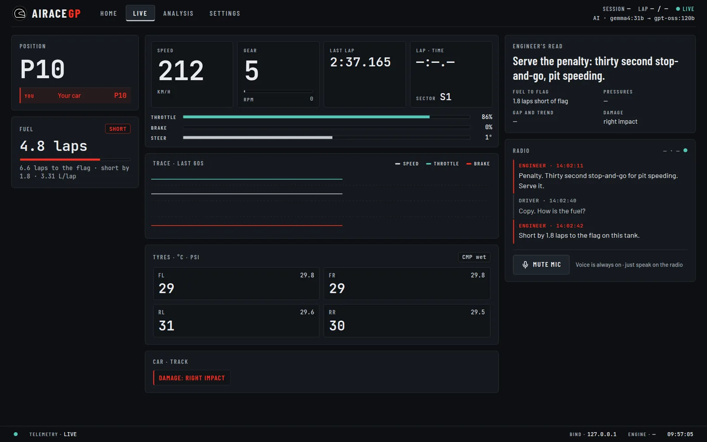

Your engineer is on the radio.
airaceGP is an AI race engineer for Assetto Corsa Competizione, with F1 25 support. It reads your live telemetry, works out what matters right now and tells you over the radio. Short calls, real numbers, and an answer when you ask.
Recommended setup
One free key: Ollama Cloud on its free tier. Your questions go to
gemma4:31b, the model that answered driver questions best in the project's tests, and
unprompted calls go to gpt-oss:120b on the same key.
How to set it up.
How it works #
The app does the analysis. The AI only phrases it. Fuel, pressures, penalties and gaps are worked out on your PC from the telemetry, ranked by what matters most, and handed to the model as a short brief. The model turns that brief into a radio call.
- Telemetry
ACC through its shared memory, plus the optional Broadcasting API for live timing (gaps, positions, driver names). F1 25 through its UDP telemetry.
- Analysis
Fuel to the flag against the stops you still owe, tyre pressures against the window, damage and fresh impacts, penalties, the mandatory pit stop deadline, spins, and gaps with their trend. The most important item becomes the headline.
- Your AI
The model you choose writes the words. You pick providers and their order in the model chain; the app falls back to the next one if a call fails.
- Voice out
Piper speaks the line on your PC. The model always answers in English; the line is translated offline into your engineer's language just before it is spoken.
- Voice in
Talk to the engineer. Your speech is transcribed on your PC with faster-whisper, or by Groq if you choose it, and answered.
Nine languages: English, Spanish, Italian, French, German, Portuguese, Czech, Polish and Japanese. Translation uses Argos Translate. Each language pack downloads once, then works with no internet. If a translation ever fails, you hear the English line rather than nothing.
What runs where #
| On your PC | Leaves your PC |
|---|---|
| Reading the game, the analysis, the dashboard, Piper speech, offline translation, and speech recognition when it is set to Local. | The race brief, sent only to the AI providers in your model chain. Your voice audio, only if you choose Groq transcription. Nothing if your chain is Ollama on your PC and transcription is Local. |
API keys stay in a local .env file next to the app. See
where keys live.
The app #

Where next #
Basic setup
Install, the first-run wizard, connecting ACC or F1 25, and talking to the engineer.
Choosing your AI
The recommended free setup, the model chain, and every supported provider.
Error codes
Every AIR code the app reports, what it means and what to do.
Troubleshooting
A silent engineer, no telemetry, microphone trouble, and how to report a problem.